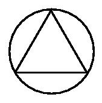

- The Pentagon (Master)
Construct a regular pentagon by using only a compass and a straight edge. Send us a description of your construction along with a proof (or an adequate explanation) showing that your construction is correct.
Challenge: We do not know the solutions to the construction of a regular heptagon and a regular nonagon.
This is a separate puzzle, but it's something to think about, once you've solved the pentagon!
Submitted by Lyle Ishol. Thanks!
Solution
- Switch Around (Intermediate)
101 - 102 = 1
Incorrect, right? Well, you can make it a true statement by
moving one number. Not a math sign, a number.
Submitted by: Alex Hart. Thanks!
Solved by: Murat Kipel, Mike Dickheiser & Cihan Altay
- A Lesser Median (Novice)
This was a game that was played earlier.
Pick a number between 0 and 1000. The person whose
number is closest to 2/3 of the median wins the game.
Note: A median (not the mean or average) is defined as "The middle value of a set
of values." Therefore the median of 1, 2, 3, 5, 5, 5, 5, 5, 5, 5, 5, 5, 10000
is 5. If there are two middle values, then the average is taken. Hence, the med
ian of 1, 2, 100, 100000 is the average of 2 and 100 = 51.
Submitted by: Brian Campbell. Thanks!
Results are in! -
Winners: Brian Galloway, Joseph Hickey & Maryse Sohier
. Congratulations!
- Random Chord (Expert)

What you see is an equilateral triangle and a circle such that the circle passes
through the three
apexes of the triangle. Let the each side of the equilateral triangle be of leng
th x. What is the probability that a random chord for this circle will be
have a length > x?
Note: A chord is a line whose endpoints lie on the circumference of the c
ircle.
Submitted by: Suman Nath. Thanks!
Solved by: Joe Hullende
r, Joseph Hickey & Michael Cantatore
- Cake Slices (Novice)
What is the maximum number of regions you can divide the area of a
circle using 3, 4 and 5 straight lines?
Solved by: Ashok Madala, Mike Dickheiser & Gökhan KINAYOGLU
Too Many Cake Slices (Expert)
You probably solved the previous puzzle using trial and error, now can you generalize the solution for n st
raight lines? What is the solution for 21 straight lines?
Submitted by: Vishal Maru. Thanks!
Solved by: Ashok Madala, Mike Dickheiser & Qing Wang
- Numero-Mania (Expert)
Give a 10 digit number that has all the digits from 0 to 9 in it.
The number is such that the first digit is divisible by 1. First
2 digits divisible by 2, first 3 by 3, first 4 by 4, so on and
finally the ten digit number is divisible by 10.
Submitted by: Vishal Maru. Thanks!
Solved by: Matt Arnold, M.R.Vijayakumar & Vani Reddy
- Missing Square (Intermediate)
Submitted by: Suman Nath. Thanks!
This puzzle is an image
Solved by: Joseph Hickey, Vishal Maru & Vivek M
- Magic Square (3x3 - Novice, 4x4 - Intermediate, 5x5 - Expert)
Arrange the numbers from 1 through 9 in three rows and three columns.
For this arrangement, the sum along
any row, column or diagonal must be the same. How about 4x4 and 5x5. Can you produce a generalized algorithm for nxn?
Submitted by: Vijay Malladi. Thanks!
3x3 Solved by: Dan Higgins, John Tripp & Claude Gepp
4x4 Solved by: John Tripp, Don Zucchiatti & Matt Arnold
5x5 Solved by: John Tripp, Don Zucchiatti & Mike Dickheiser
Others: John Tripp (6x6, 8x8), Francis Desjardins (9x9), Joseph Williams (13x13)
- Babies (Intermediate)
A town has two hospitals, one big and one small. Every day the big
hospital delivers 1000 babies and the small hospital delivers 100
babies. There's a 50/50 chance of male or female on each birth.
Which hospital has a better chance of having the same number of boys
as girls? You must explain your answer.
Solved by: Matt Arnold, Mano & Vishal Maru
- Desperate Prisoner (Novice)
A prisoner is given 2 bowls, 100 red balls, and 100 white balls. He is
told to put the balls into the bowls any way he wishes, as long as there
is at least one ball in each bowl. He cannot leave any balls out. The
Executioner will come in and reach into a random bowl and draw out a ball.
If it is red, the prisoner dies. If it is white, he goes free. How should
the prisoner arrange the 200 balls so that he has the greatest possibility
of going free?
Solved by: Kanwar Singh, Claude Gepp & P. Rosini
Lateral solution by: Jacqueline
- Prime Sequence (Master)
How many prime numbers are present in the sequence:
101, 10101, 1010101, ...? You must provide a mathematical explanation for your answer.
Solution
-
1 = -1 (Expert)
-1 = -1
This can be represented as
1 / (-1) = (-1) / 1
Take square roots of both sides
sqrt(1 / (-1)) = sqrt((-1) / 1)
This is the same as saying
sqrt(1) / sqrt(-1) = sqrt(-1) / sqrt(1)
Multiply both sides by sqrt(-1) * sqrt(1)
sqrt(1) * sqrt(1) = sqrt(-1) * sqrt(-1)
i.e.
1 = -1
What is the problem with this proof?
Submitted by: Anthony StJohn. Thanks!
Solved by: Natalie Da
ke, RMontgomery & Siddhartha Mathur
- Holey Sphere (Master)
If you drill a cylindrical hole, that is six inches long, through the center of a sphere, what is the remaining volume of the sphere? The diameter of the cylinder is not negligible. Yes, the data is sufficient!
Solved by: Anthony StJohn, Claude Gepp & Joe Hullender
- Friends (Expert)
What is the probability that at least two people in the world have the
same number of friends? Assume that friendship is mutual.
Solved by: Layne R.Clemenz, John Tripp & Anth
ony StJohn
- Root (Intermediate)
Find the value of this arithmetic expression:
sqrt(2 * sqrt(2 * sqrt(2 * sqrt(2 * sqrt(2* ........
This goes on infinitely, followed by infinite close-parentheses. :-)
Solved by: Claude Gepp, John Tripp & Matt Arnold
- Brothers and Sisters (Novice)
Dave's and Sue's mother is going to have a baby. If it is a girl, Dave will
have twice as many sisters as brothers. If it is a boy, Sue will have twice
as many brothers as sisters. How many children does their mother have now?
Submitted by: Tracy Warren. Thanks!
Solved by: Adarsh, WAKCER, Mike Dickheiser & Matt Arnold
- It is relatively easy to check a number for divisibility by 2,3,4,5,6,8,9 or 10. But how can you test a number for divisibility by 7? (Expert)
Solved by: Kathy Dunham, Fred & Tracy Warren
- How about divisibility by 11? (Expert)
Submitted by: Dan Higgins. Thanks!
Solved by: Kathy Dunham, John Tripp & Tracy Warren
- 1 = 2 (Novice)
A = B
AB = B^2
AB - A^2 = B^2 - A^2
A(B - A) = (B - A) (B + A)
A = B + A
A = A + A
A = 2A
1 = 2
What is the problem with the following proof?
Submitted by: Vijay Malladi. Thanks!
Solved by: Jugraj, John Tripp & Kenny Compton
{kind=link}